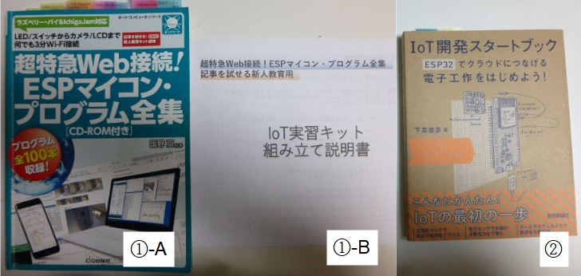
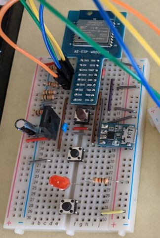
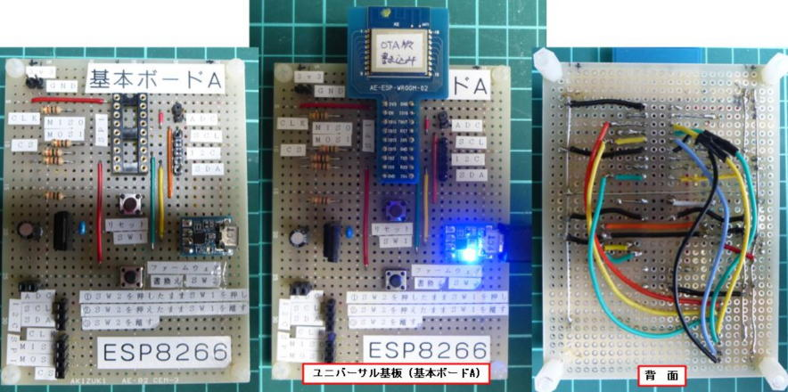
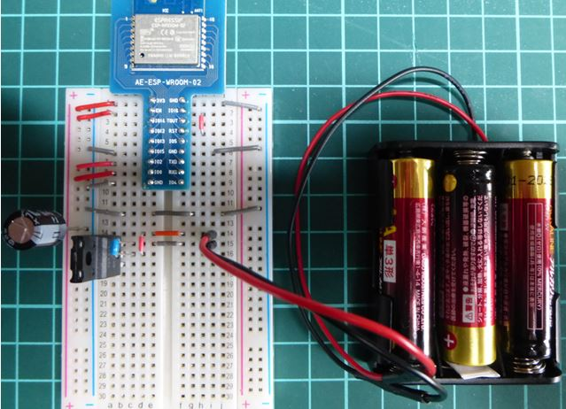
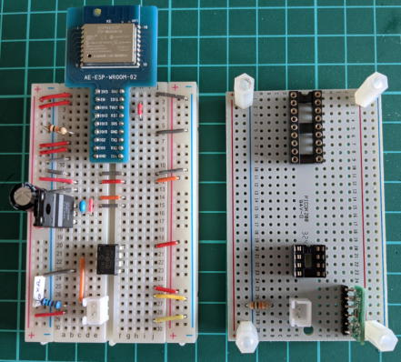
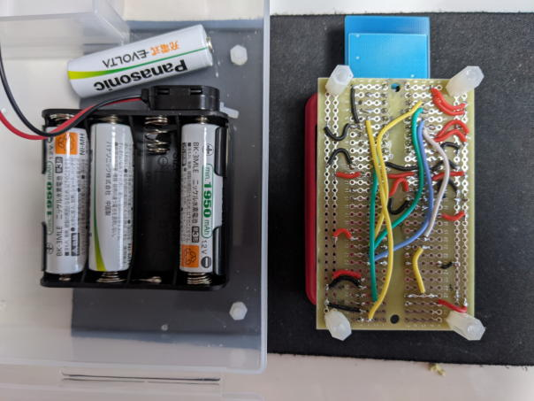
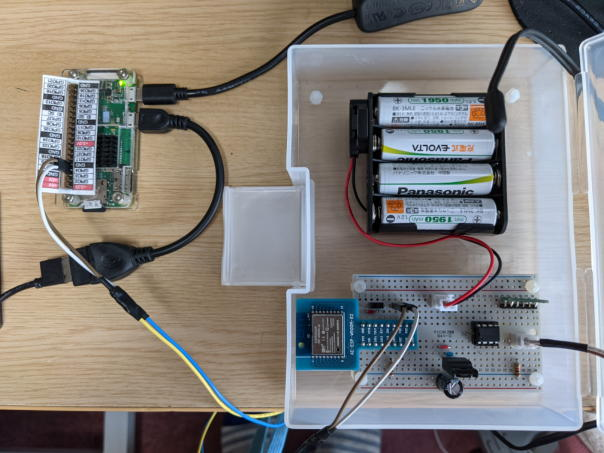
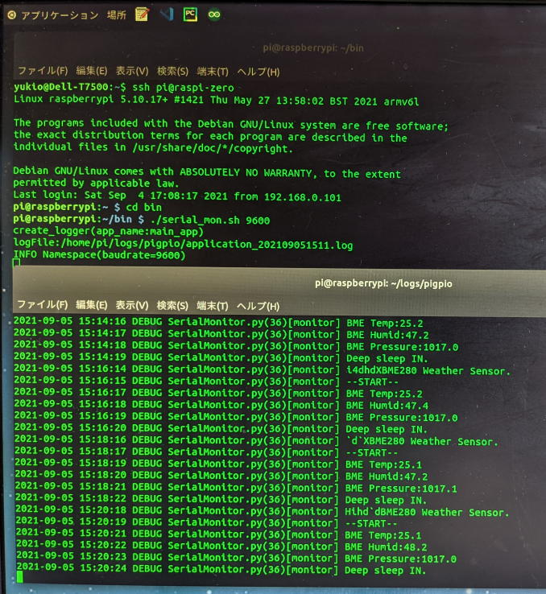

ESP-WROOM-02 DIP化キットを使った気象センサーモジュール
【最終更新日】2022-11-01
1. ESP-WROOM-02 の参考書
気象センサーモジュール (ESP-WROOM-02) の制作と制御プログラミングで参考にした書籍

引用箇所と書籍名
-
第１章 1 ESPスタータ・キット×ブレッドボードで作るＩｏＴ実験ポード
ブレッドボードを使って実験用ボードを制作する
-
Appendix 2 いつまでも動く無人ＩｏＴを作る！ ESPマイコンのケチケチ運転術
スタンバイ電流の小さい電源ICで間欠運転！ 6か月連続動作
①-A 超特急Web接続! ESPマイコン・プログラム全集 [ CQ出版社 ]
ESP-WROOM-02(ESP8266) モジュール実験用ボード (基本ボードＡ)
4-5 ケチケチ運転術・基本ボード (B)
①-B 超特急Web接続! ESPマイコン・プログラム全集 記事を試せる新人教育用
ＩｏＴ実習キット組み立て説明書
第４章 より実用的なセンサ端末を作る
低消費電力な端末を開発する
③ ＩｏＴ開発スタートブック ESP32でクラウドにつなげる 電子工作を始めよう！ [技術評論社]
- ①-A 基本的にはこの本のソースコードを参考にプログラムを作成
- ①-B 上記書籍の最新の配線が記載されたPDFドキュメント
※ ①-Aの著者サポートページからダウンロード
- ② この本の実装はESP-WROOM-32用なのでそのままではESP-WROOM-02では使えないので間欠運転のロジックを借用。
2. 書き込み用の開発ボード (A) の製作
2-1. PDF文書 ①-Bを元にブレッドボード上に書き込み用の回路を組み立てる
ブレッドボード上の開発ボード (A)

2-2. 開発ボード (A) をユニバーサル基板にハンダ付けする
ブレッドボードで組んだ回路では、書き込み作業中に部品・配線が外れてしまい途中で書き込みに失敗することがあります。
恒常的に使う場合は下記のようにユニバーサル基板に回路をハンダ付けしたほうが良いでしょう。
さらに3.3Vの出力電源、I2Cポート、SPIポートをボードの下左端にまとめたので実験作業の使い勝手が向上しました。
ユニバーサル基板に回路をハンダ付けした開発ボード (A)

3. 気象センサーモジュール(ESP-WROOM-02) の製作
3-1. ケチケチ運転術・基本ボード (B) の製作
ブレッドボード上にテスト用のWi-Fi通信機能プログラムの書き込みが終わったESP-WROOM-02 DIP化キットと安定化電源を配置し、
乾電池を繫いでWi-Fi通信機能が正しく動作するか確認します。
ESP-WROOM-02 DIP化キット + 安定化電源 + 乾電池 (1.5V x 3本=4.5V)

3-2. 気象センサーモジュールの組み立て
上記の 3-1 に加えセンサーモジュールの部品を配置し、実際にセンサーから取得したデータがWi-Fi経由でUDPパケットとして発信することを確認します。
- 【使用部品】
- ESP-WROOM-02 DIP化キット
- レギュレータ (3.3V 500mA) + コンデンサー + 抵抗
- アナログコンバータ (MCP3002)
- 気象センサー BME280 (気温・湿度・大気圧)
- 外気温測定用のサーミスタ用ソケット
- 片面ガラス・ユニバーサル基板（ブレッドボード配線パターンタイプ）
ブレッドボード上のセンサーモジュールとユニバーサル基板

ブレッドボードと同じ配線パターンのユニバーサル基板を使用したので、ブレッドボード上の配線を確認しながらハンダ付けができ配線のミスもへらすことができます。
3-3. 電池モジュールと気象センサーモジュールの配線状況
- 【電池モジュール】
- リチウムイオン電池 (1.2v) x 4本 = 4.8v
- 電池ボックス 単3 x 4本 リード線
電池モジュールとセンサージュール (背面) のハンダ付け状況

3-4. 完成した気象センサーモジュール

3-5. 気象センサーモジュールの動作確認
ラズパイ側で気象センサーモジュールの動作を確認する (ESP-WROOM-02モジュールのシリアルログを出力)
気象センサーモジュールとラズパイをシリアル接続

センサーデータの取得と間欠運転 (Deep Sleep) が正常に動作していることを確認しているところ

ソースコードは下記リポジトリ【ラズベリーパイによる家庭用気象データ監視システム】へ
https://github.com/pipito-yukio/home_weather_sensors/tree/master/esp_wroom_02
引用箇所と書籍名
- 第１章 1 ESPスタータ・キット×ブレッドボードで作るＩｏＴ実験ポード
ブレッドボードを使って実験用ボードを制作する- Appendix 2 いつまでも動く無人ＩｏＴを作る！ ESPマイコンのケチケチ運転術
スタンバイ電流の小さい電源ICで間欠運転！ 6か月連続動作
ESP-WROOM-02(ESP8266) モジュール実験用ボード (基本ボードＡ)
4-5 ケチケチ運転術・基本ボード (B)
ＩｏＴ実習キット組み立て説明書
第４章 より実用的なセンサ端末を作る
低消費電力な端末を開発する
- ①-A 基本的にはこの本のソースコードを参考にプログラムを作成
- ①-B 上記書籍の最新の配線が記載されたPDFドキュメント
※ ①-Aの著者サポートページからダウンロード
- ② この本の実装はESP-WROOM-32用なのでそのままではESP-WROOM-02では使えないので間欠運転のロジックを借用。
2-1. PDF文書 ①-Bを元にブレッドボード上に書き込み用の回路を組み立てる
2-2. 開発ボード (A) をユニバーサル基板にハンダ付けする
ブレッドボードで組んだ回路では、書き込み作業中に部品・配線が外れてしまい途中で書き込みに失敗することがあります。 恒常的に使う場合は下記のようにユニバーサル基板に回路をハンダ付けしたほうが良いでしょう。
さらに3.3Vの出力電源、I2Cポート、SPIポートをボードの下左端にまとめたので実験作業の使い勝手が向上しました。
3-1. ケチケチ運転術・基本ボード (B) の製作
ブレッドボード上にテスト用のWi-Fi通信機能プログラムの書き込みが終わったESP-WROOM-02 DIP化キットと安定化電源を配置し、 乾電池を繫いでWi-Fi通信機能が正しく動作するか確認します。
3-2. 気象センサーモジュールの組み立て
上記の 3-1 に加えセンサーモジュールの部品を配置し、実際にセンサーから取得したデータがWi-Fi経由でUDPパケットとして発信することを確認します。
- 【使用部品】
- ESP-WROOM-02 DIP化キット
- レギュレータ (3.3V 500mA) + コンデンサー + 抵抗
- アナログコンバータ (MCP3002)
- 気象センサー BME280 (気温・湿度・大気圧)
- 外気温測定用のサーミスタ用ソケット
- 片面ガラス・ユニバーサル基板（ブレッドボード配線パターンタイプ）
ブレッドボードと同じ配線パターンのユニバーサル基板を使用したので、ブレッドボード上の配線を確認しながらハンダ付けができ配線のミスもへらすことができます。
3-3. 電池モジュールと気象センサーモジュールの配線状況
- 【電池モジュール】
- リチウムイオン電池 (1.2v) x 4本 = 4.8v
- 電池ボックス 単3 x 4本 リード線
3-4. 完成した気象センサーモジュール
3-5. 気象センサーモジュールの動作確認
ラズパイ側で気象センサーモジュールの動作を確認する (ESP-WROOM-02モジュールのシリアルログを出力)
ソースコードは下記リポジトリ【ラズベリーパイによる家庭用気象データ監視システム】へ
https://github.com/pipito-yukio/home_weather_sensors/tree/master/esp_wroom_02